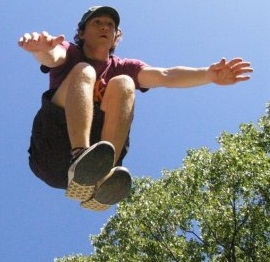

Chris 'Spydr' Wachtman
cwachtman@gmail.com

I'm Chris, but Spydr is easier to remember and there are too many people in the club named Chris. I began doing parkour sometime in 2006. My specialty is handstands.
I have accounts all over the interwebs. Here are a few:
Facebook -
Twitter -
YouTube